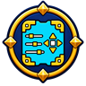
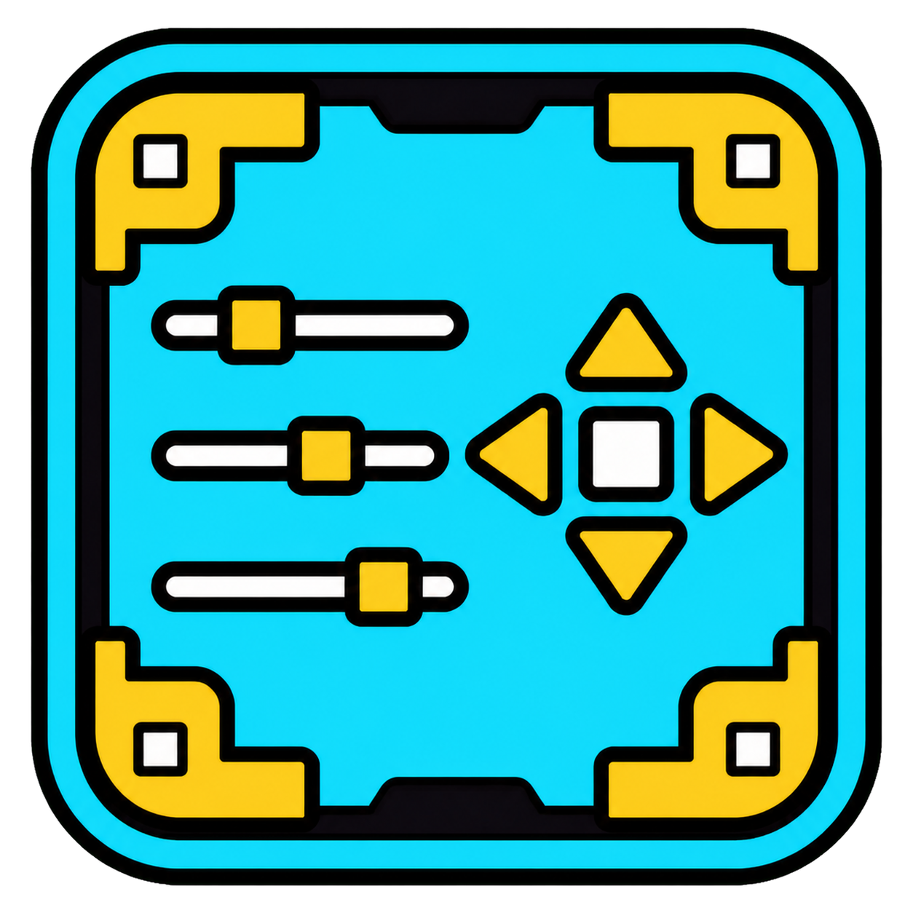

Focused editing
Use a contextual panel, touch scale slider, corner handles, and safe focus shading around the selection.

Pause Menu StudioMove, resize, group, and hide controls with a focused visual editor. Preview the result, save named layouts, and build information cards around the way you play.

Pause Menu Studio treats complex widgets as logical blocks, so a music panel or difficulty card moves as one element instead of falling apart.
Use a contextual panel, touch scale slider, corner handles, and safe focus shading around the selection.
Apply, rename, duplicate, or delete saved designs from clean layout cards.
Hide the editor chrome for a clean view, or recover hidden blocks from the visual recycle bin.
Edit platformer-only controls with independent positions, layouts, and hidden-block storage.
Edit the level-editor pause button with independent creator and platformer-creator layouts.
Check GitHub Releases, verify the downloaded package, and stage the next version without leaving Geometry Dash.
Add level, music, coin, difficulty, and supported demon-list information to the pause menu.
The multi-platform Geode package contains native Windows, Android32, and Android64 binaries. Touch dragging is supported on Android.